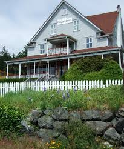

Accomidations
There is alot of different places to stay on the island. Below we are going to go into a deeper dive of what different options you can have! Whatever can work best for you and your party.
Orcas Hotel
The Orcas Hotel is one of the oldest places that you can stay! Very historic and beautiful. But it is one of the furthest places from town. It is right across from the ferry landing though! More Info
West Beach Resort

West Beach Resort is one of my personal places to go even if you aren't staying here. It's outside of town but still close enough that it's not too far of a drive. They have the best sunsets and are very family friendly! More Info
Outlook Inn

Outlook Inn is right in town and is very convenient. Personally from living on island this isn't really one of the more popular places to stay but it can be a good fit for some! More Info
Airbnb locations
There are tons of air bnbs that you can look into! Air bnbs are a great option for families, groups, or really anyone coming to visit the island. Here's one of my personal reccomendations - Air bnb
Moran State Park Camping
If you are coming in the summer months, camping can be a great way to go! Moran state park is full of hikes, swimming, and adventures! Moran State Park
Others
There are many other places to stay if none of these are good for your needs. But again these are the ones that I highly reccomend as you plan your trip!